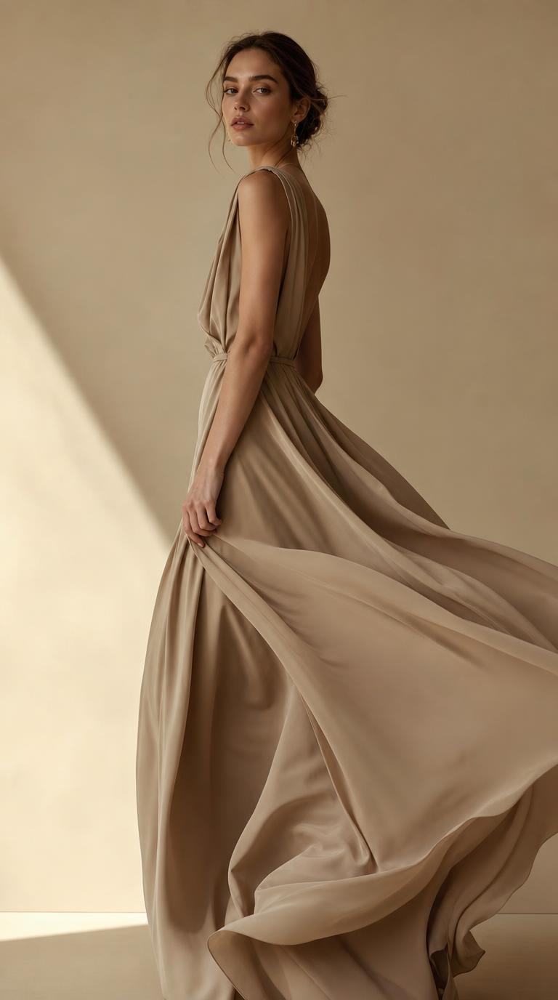
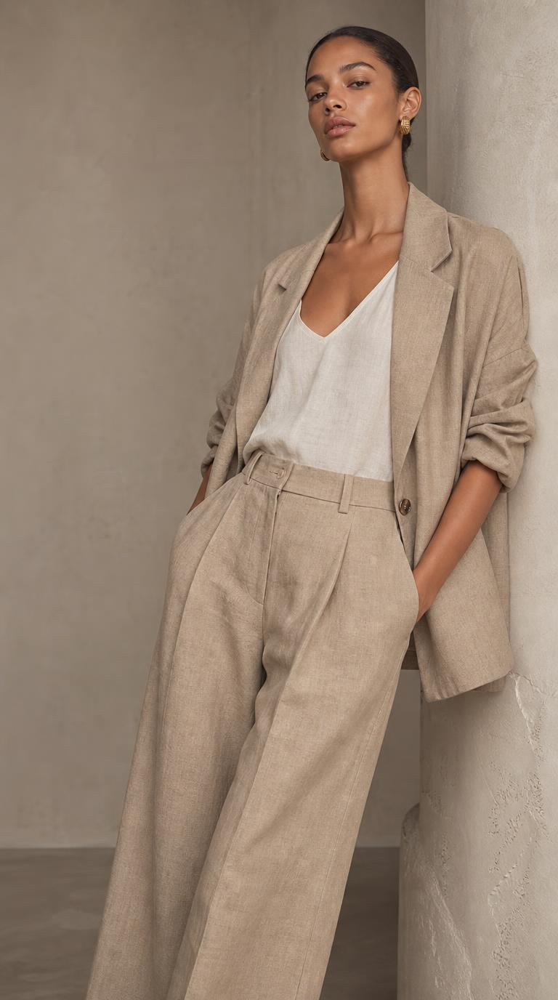

Helai Studio dimulai tahun 2020 dari sebuah meja jahit kecil di Jakarta. Pendirinya, Laras, lelah dengan busana yang cepat rusak dan cepat membosankan. Ia ingin menciptakan pakaian yang bertahan — baik secara kualitas maupun gaya.
Nama "Helai" dipilih karena mewakili keyakinan kami: keindahan besar tersusun dari perhatian pada hal-hal terkecil. Sehelai kain, satu jahitan, satu detail — semuanya penting.

Setiap koleksi kami lahir dari nilai yang sama, tak peduli musim apa pun.
Kami merancang lebih sedikit tapi lebih matang. Setiap potongan dipikirkan agar punya alasan untuk ada di lemari Anda.
Monokrom hitam dan nude bumi kami pilih karena mudah dipadukan, tak pernah berteriak, dan selalu terlihat elegan.
Potongan kami mengalir, bukan menekan. Busana seharusnya membuat Anda nyaman menjadi diri sendiri.
Dengan produksi terbatas dan bahan tahan lama, kami mengurangi limbah dan mendorong konsumsi yang lebih sadar.

Atelier JakartaDi balik setiap busana ada proses yang kami jaga sungguh-sungguh — dari pemilihan kain, pembuatan pola, jahitan tangan, hingga kontrol kualitas satu per satu.
Kami menyeleksi kain langsung dari pemasok terpercaya — memastikan tekstur, ketebalan, dan kejujuran serat.
Setiap pola dirancang ulang berkali-kali sampai jatuh dan fit-nya benar-benar pas di beragam bentuk tubuh.
Penjahit ahli mengerjakan detail penting secara manual — dari kelim hingga finishing kancing.
Sebelum sampai ke Anda, setiap potong diperiksa satu per satu. Yang tak lolos, tak kami jual.
Kami dengan senang hati membantu. Hubungi tim kami langsung dan ceritakan yang Anda cari.
Hubungi Kami